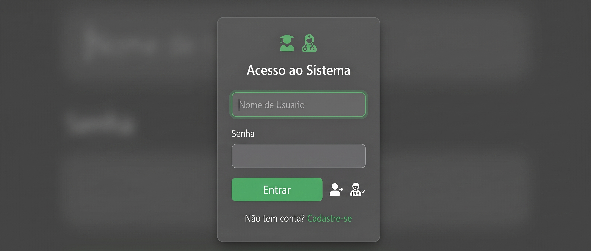
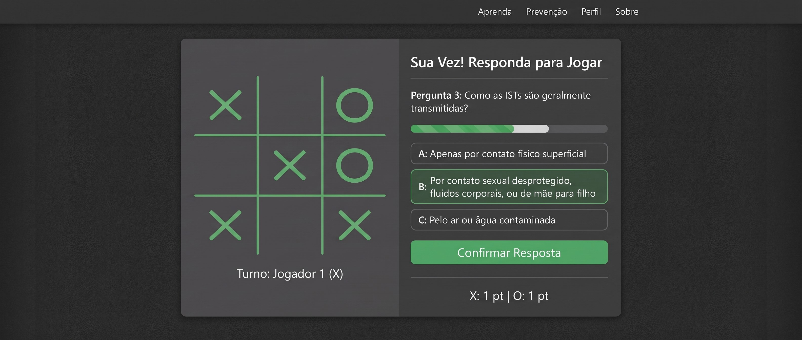
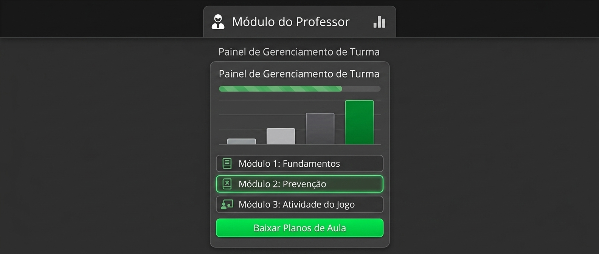

Faça login para salvar seu progresso no jogo e acessar conteúdos exclusivos sobre ISTs.

Teste seus conhecimentos! Acerte a questão de múltipla escolha sobre ISTs para garantir sua jogada no tabuleiro.

Acompanhe o desempenho da turma por meio de gráficos e faça o download de planos de aula.